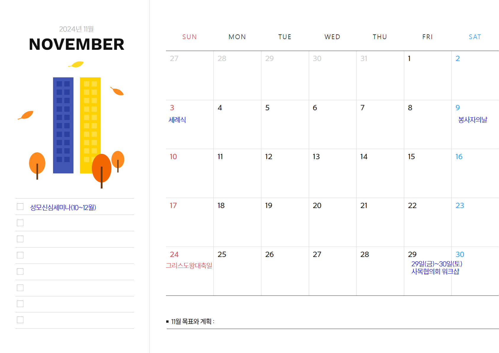

2024년 9월 사목협의회 진행 순서
순교자 성월(한국 순교자들에게 바치는 기도)
○ 이 땅의 모든 순교자여,
당신들은 하느님의 은총에 힘입어
굳은 신앙으로
예수 그리스도의 사랑과
복음과 교회를 위하여
피를 흘리셨나이다.
● 저희는 현세에서 악의 세력과 치열하게 싸우며
당신들이 거두신 승리의 영광을 노래하고
모든 선의 근원이신 하느님을 찬양하오니
저희를 위하여 빌어 주소서.
○ 위대하신 순교자들이여,
천상의 모후이신 성모 마리아와 함께
저희를 위하여 빌어 주시어
하느님의 자비를 얻어 주소서.
● 지금도 어둠의 세력이
교회를 박해하고 있사오니
하느님께서 전능하신 팔로 교회를 붙들어 보호하시며
아직 어둠 속에 있는 지역에까지
널리 펴시도록 빌어 주소서.
○ 용감하신 순교자들이여,
특별히 청하오니
우리나라를 위하여 하느님께 빌어 주소서.
당신들은 이 땅에서
많은 고난을 겪으며 사시다가
목숨까지 바치셨으니
○ 전능하신 하느님께 빌어 주시어
교회를 이 땅에서 날로 자라게 하시며
사제와 수도자를 많이 나게 하시고
신자들이 주님의 계명을 잘 지키고
냉담 교우들은 다시 열심해지며
갈린 형제들은 같은 믿음으로 하나 되고
비신자들은 참신앙으로 하느님을 알아
천지의 창조주
인류의 구세주를 찾아오게 하소서.
○ 참으로 영광스러운 순교자들이여,
저희도 그 영광을 생각하며 기뻐하나이다.
간절히 청하오니
자비로우신 하느님 아버지께 빌어 주시어
저희와 친척과 은인들에게
필요한 은혜를 얻어 주소서.
● 또한 저희가 죽을 때까지
예수 그리스도를 한결같이 믿어 증언하며
비록 피는 흘리지 못할지라도
주님의 은총을 입어 선종하게 하소서.
○ 성 김대건 안드레아와 성 정하상 바오로와
동료 순교자들이여,
저희를 위하여 빌어 주소서.
신부님 전달사항
9월 전신자 성지순례
총구역
분과별 주요 진행사항
마침기도(영광송)


